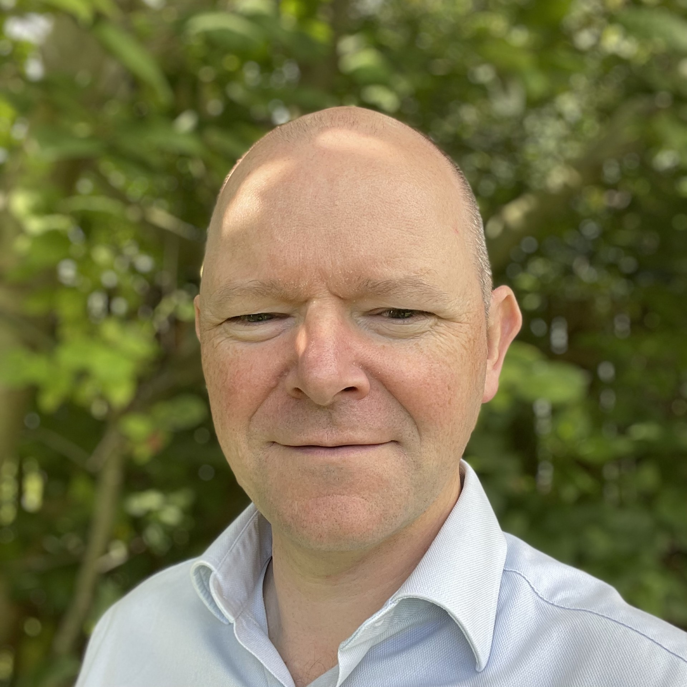

Quiet Mind. True Self. Shared Path.
Human growth in the age of AI
Elmra connects personal clarity with practical responsibility. We want AI to help people learn, contribute and care for one another, with its benefits shared across society.
Quiet Mind helps us pay attention. True Self asks us to act with integrity. Shared Path turns care into responsible action.
Care, freedom and security require effort, accountable institutions and people willing to take responsibility. Good intentions need evidence, difficult choices and follow-through.
Three ideas to explore
These are starting questions and proposed experiments. We are inviting scrutiny before making commitments.
- Clarity
AI assessment
Helping people ask better questions about AI.
Explore the idea - Dignity
Responsible workforce transition
Including workers and sharing the benefits of change.
Explore the idea - Stewardship
AI for public and environmental wellbeing
Testing benefits against real costs and harms.
Explore the idea
Reading that informs us
These books inform our reflection; they are not evidence that an AI system or proposed intervention works.
- The Way of the Peaceful Warrior by Dan Millman
- When Things Fall Apart by Pema Chödrön
- The Untethered Soul by Michael A. Singer
- Meditations by Marcus Aurelius
- Radical Acceptance by Tara Brach
- The Obstacle Is the Way by Ryan Holiday
- Man’s Search for Meaning by Viktor Frankl
- Atomic Habits by James Clear

A personal initiative
Who’s behind Elmra?
I’m Roger McKenna. My working life began on building sites as a carpenter, before taking me through site management, building surveying and real estate investment, and eventually into environmental and building conservation.
I grew up in Northern Ireland during the Troubles. That experience shapes how I think about security, the opportunities peace makes possible, and the responsibility we share for how we live together.
Making things and working on buildings taught me to respect skill and effort, and the satisfaction of ending a day having left something lasting and useful in the world. The Investment world taught me to examine incentives, weigh risks and look beyond headline return. Conservation has taught me to seek balance and take a longer view: how we use resources today affects the places, wildlife and opportunities that future generations will inherit.
Elmra is a personal project I’m developing in my spare time. It brings these experiences together around a question I want to explore with you, with the world: how can AI help us live well, help more people contribute, and improve our lives without exhausting the natural world that sustains us?
This is the future I want to help build for my friends, colleagues and children a future which gives more people a chance to flourish, and leaves something worth passing on.
Share a question or critique
Email Elmra with your thoughts on an idea. Please avoid sensitive personal or workplace information.
Newsletter subscriptions are not yet available.